PROFTAAK
TRUCKERDIRECT
ONTWERPFASE
ONTWERPFASE
Bij het selecteren van het logo voor ons logistieke bedrijf hebben we gekeken naar wat het beste zou passen. Daarnaast hebben we nagedacht over de belangrijkste aspecten van een app voor truckers. Het is cruciaal dat de app overzichtelijk is en snel de benodigde informatie levert. Nadat we een duidelijk beeld hadden van onze activiteiten, ben ik begonnen met het ontwerpen van het logo en de bijbehorende ontwerpelementen. Voor dit proces heb ik Bootstrap en de bijbehorende kleuren van Bootstrap gekozen. Dit was een doordachte keuze, vooral omdat ik de enige student in de media was. Bootstrap is namelijk zeer begrijpelijk voor software engineers, wat betekent dat ze me snel kunnen ondersteunen als ik tijdsdruk ervaar bij het samenstellen van de applicatie.
LOGOSCHETSEN
LOGO
Voor het ontwerp van het logo heb ik me laten inspireren door bestaande logo's en heb ik feedback gevraagd aan mijn medestudenten om te bepalen welk ontwerp het meest aansprak. Het idee van een vrachtwagen die snel beweegt of richting de zonsondergang gaat, kwam ter sprake. Uiteindelijk vond ik het concept van de T-splitsing het meest aansprekend, omdat Truckerdirect met een T begint en eindigt. Als er meer tijd beschikbaar was geweest, had ik waarschijnlijk een animatie gemaakt met alleen het T-logo en vervolgens de volledige tekst. Vervolgens heb ik het logo gecreëerd in Photoshop. Om ervoor te zorgen dat het logo schaalbaar is en op elk platform en in elke grootte kan worden gebruikt, heb ik het ontwerp in een vectorformaat gemaakt.
LOGOSCHETSEN
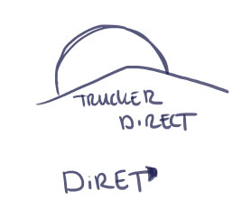
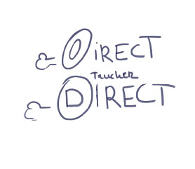
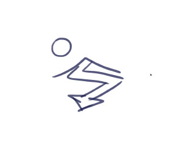 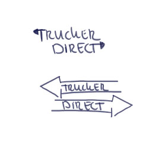
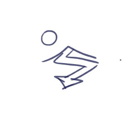 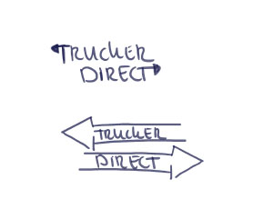
LOGOSCHETSEN versie 1
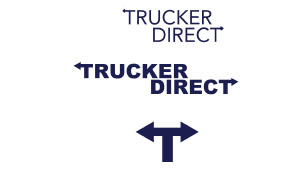
FINAL
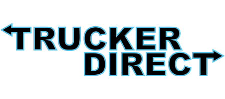
UI/UX DESIGN
WIREFRAMES
De wireframes waren al voorbereid door de software engineers in ons team. Een van onze teamleden had ervaring bij een logistiek bedrijf en had een goed inzicht in wat nodig was voor de pagina. Op basis van deze wireframes heb ik twee ontwerpen gemaakt, die respectievelijk "normal mode" en "dark mode" werden genoemd. Mijn inspiratie voor deze ontwerpen kwam vooral voort uit twee bronnen. Eerst stuitte ik toevallig op een UX-design dat ik zeer indrukwekkend vond. Daarnaast diende UberEats als een andere inspiratiebron voor mijn ontwerpen.INLOGSCHERMEN
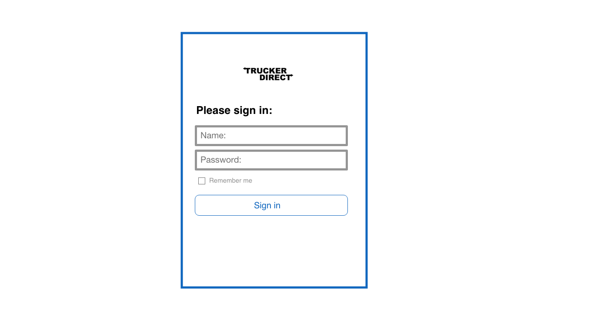
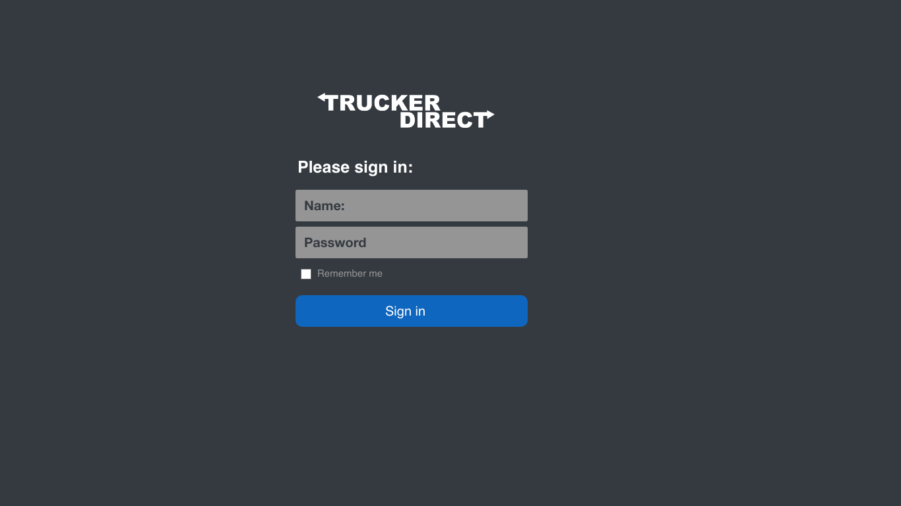
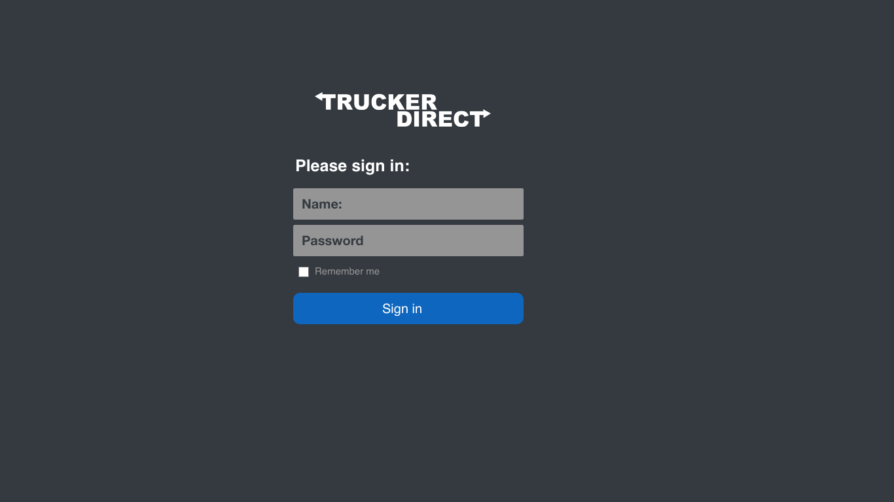
FINAL DESIGN
USERTESTEN
De vraag aan de gebruikers is: als je op zoek bent naar een baan, welk van de 3 ontwerpen denk je dat het beste bij je past? Als je een rit wilt aanvragen, kun je dit ook doen.
Om toegang te krijgen tot de gebruikersprofielen, ga je vanuit het dashboard naar de 'Jobs'-sectie, vervolgens naar 'Filled Jobs', keer je terug naar het dashboard en ga je naar 'Users'. Op een schaal van 1 tot 10, hoe zou je de applicatie beoordelen?